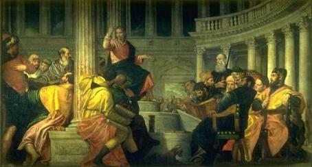
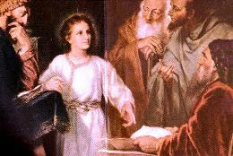
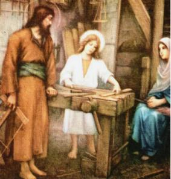
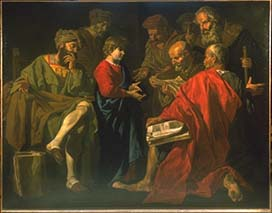
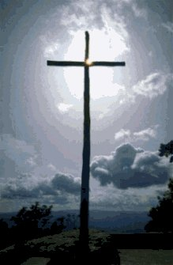
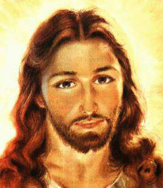
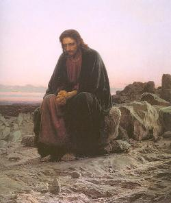

- A Sagrada Escritura descreve um acontecimento notável,
ocorrido na
- A Sagrada Escritura descreve um acontecimento notável,
ocorrido na
Juventude de JESUS, suficiente para fazer-nos compreender o DEUS maravilhoso que se manifestava através daquele MENINO - HOMEM.
- A Sagrada Escritura descreve um acontecimento notável,
ocorrido na
Todos os anos, em obediência aos preceitos da Lei, os judeus eram obrigados a participarem das três principais festas religiosas que se realizavam no Templo em Jerusalém: Páscoa, Pentecostes e Tabernáculo. Por essa razão, desde criança, JESUS com seus pais, em companhia de parentes, vizinhos e amigos, formavam uma grande caravana e viajavam de Nazaré à Jerusalém, para participarem daquelas celebrações. Era necessário a formação de caravanas para se protegerem contra os assaltos de bandidos e ladrões, que infestavam aquela região.
- Também pela Lei, aos 12 anos de idade, os homens
eram considerados “cidadãos judeus”
, adquirindo direitos e obrigações civis e religiosas, da
mesma forma que as mulheres ficavam legalmente autorizadas a se casarem.
Geralmente a declaração da “maioridade” dos rapazes, era feita no Templo, num dia da semana durante as celebrações da Páscoa.

Todavia, naquela primavera do ano 7 dC, o ambiente na cidade se apresentava de maneira anormal e assustador, com grande movimentação política e uma detestável atividade de bandos de malfeitores.
Em fins do ano anterior, Arqueláu que era o Governador da Judéia, foi convocado a comparecer diante do Senado em Roma, para responder por seus crimes e tiranias, que tornava insuportável viver sob o seu domínio. Tantos eram, que não conseguiu defender-se das acusações, sendo julgado culpado e condenado a viver exilado em Viena, na Gália, de onde nunca mais voltou, sendo os seus bens confiscados pelos romanos.
Em face deste acontecimento, a Judéia ficou um tempo apreciável sem Governador. Diversos grupos políticos se insurgiram e se proclamavam “donos da lei”. Ocorreram brigas, furtos, saques de propriedades e mortes bárbaras, porque no meio da confusão se infiltraram bandidos, pessoas mal intencionadas e malfeitores, deixando no povo um grande medo e uma imensa incerteza, pela ausência de uma autoridade constituída que mantivesse a ordem e impusesse o direito e a justiça.
Em consequência, as famílias que chegavam para participarem das cerimônias, procuravam manter-se unidas entre si e junto de seus amigos, com a finalidade de não oferecerem condições para sofrerem ocorrências desagradáveis.
- Terminadas as solenidades da Páscoa Judaica, como
acontecia em todos os anos, as famílias regressaram a seus lares. Entretanto,
desta vez JESUS ficou em Jerusalém, sem que ninguém percebesse. José e Maria
sentiram falta de sua presença, mas imaginaram que ELE estivesse com outros
rapazes na caravana. Não deram grande importância ao fato porque O conheciam
muito bem e sabiam, que algo de útil estava fazendo.
Mas, no fim do primeiro dia de viagem, quando a
caravana parou no local previamente combinado, e cada família descarregou os seus
animais para montarem 
Cada hora que passava, mais aumentavam os seus temores e as suas incertezas, primordialmente porque se lembravam daquele estado de revolta e daquela série de acontecimentos deploráveis, que produziam uma grande insegurança no meio do povo.
Chegaram a Jerusalém ao entardecer, cansados pelo desgaste físico da viagem e torturados por uma quantidade incontável de pensamentos negativos que destruía a natural tranquilidade do casal e impedia que descansassem corretamente.
No terceiro dia, pela manhã, encontraram JESUS no Templo! ELE estava sentado entre os escribas e doutores da lei, sendo questionado e respondendo todas as perguntas com sabedoria e discernimento, explicando os versículos da Sagrada Escritura com autenticidade e com a autoridade que somente ELE sabia exercer. Todos estavam admirados com sua inteligência e com suas palavras. Verdadeiramente o ESPÍRITO DE DEUS estava NELE e falava pelos seus lábios, pelos seus gestos e seu Coração.
- José e Maria ficaram impressionados com aquela notável
manifestação de seu FILHO JESUS! Aguardaram o momento oportuno e O
chamaram.
Maria falou:
“Meu Filho, porque agiste assim conosco? Olha que teu pai e eu, aflitos, te procurávamos”. (Lc 2,48)
JESUS respondeu:
“Porque me procuráveis? Não sabíeis que devo estar na casa de meu PAI?” (Lc 2, 49)

Por sua vez, JESUS percebendo que involuntariamente tinha causado intranquilidade e aflições a José e Maria, despediu-se dos doutores da lei e seguiu com seus pais para Nazaré, obedecendo-lhes com total submissão. (Lc 2,51)


- Dos 12 aos 30 anos de idade, a Sagrada Escritura não
informa e nem faz referências sobre as atividades do SENHOR. Por esta razão,
sendo um
Principalmente no caso dos Essênios, muito foi
escrito e falado, e muitas provas foram arquitetadas e arranjadas. A
maioria dos argumentos se baseavam em pergaminhos escritos naquela época, que
foram encontrados casualmente dentro de jarras de barro, em 1947, por um jovem
beduíno, numa caverna em Khirbat Qumran, em Israel. Estes documentos são
conhecidos como os “Manuscritos do
Mar Morto”. O achado despertou o interesse de
estudiosos e arqueólogos, que empreenderam uma ampla pesquisa e
realizaram escavações, localizando e desenterrando um Mosteiro
Essênio, descobrindo muitos outros manuscritos que falam sobre eles,
sobre a época em que viveram e sobre as doutrinas da Seita, permitindo-nos
saber que eram monges, que se assemelhavam quanto ao comportamento, as regras
e os hábitos de suas vidas, a uma ordem religiosa moderna. Levavam uma vida muito
austera, praticando o celibato, a humildade e a pobreza. Tinham seus bens em
comum e vestiam-se com túnicas branca, para simbolizar a pureza moral que
cultivavam. Exercitavam intensamente a espiritualidade, sempre orientada para o
DEUS UNO, da mesma forma, que acreditavam e aguardavam a vinda do Messias.
Consideravam-se como perfeitos santos, como depositários dos mais secretos desígnios
do CRIADOR, e com grande ênfase, pregavam a necessidade da prática do amor
fraterno e das boas obras, assim como aguardavam a luta definitiva entre o
“bem” e o
“mal”. Eram praticamente
eremitas do deserto. Segundo o relato dos manuscritos, fazem menção a um personagem
que existia no 
- É verdade que existiram os monges essênios e que eles viveram na
época de JESUS, tinham uma vida irrepreensível, assim como um “Chefe” exemplar, um homem
digno, honesto, considerado por todos como uma pessoa “justa”, que possuía qualidades notáveis, raramente
igualadas por outro ser humano. Sabemos ainda, que São João Evangelista, Discípulo do
SENHOR, os admirava e sempre que se referia a eles, o fazia com muita simpatia e
consideração, pelo fato de que os monges essênios eram realmente, uma
respeitada facção religiosa judaica, antes e logo após o alvorecer do
Cristianismo.
Dessa forma, em vista de todas estas qualidades admiráveis, é perfeitamente admissível e normal que São João Evangelista, assim como qualquer outro Apóstolo reconhecesse nos essênios a grandeza de sua obra, apreciasse as suas notáveis e preciosas qualidades, assim como reverenciasse o valor de seu espírito.
A Seita dos Essênios, assim como todas as outras existentes, praticamente desapareceram na guerra do ano 70 dC, quando as legiões romanas comandadas por Tito, constituída por soldados adestrados e bem armados, destruíram a cidade de Jerusalém, incendiaram o Templo e aniquilaram todos os focos de agitação no território judeu, inclusive os grupos religiosos, que no pensamento romano, eram considerados suspeitos.
Dos Essênios restou a lembrança, representada pelas relíquias arqueológicas e pelos manuscritos, que são motivos de estudos e apreciações.
Resultante única do massacre das guerras, do fanatismo de governantes e das perseguições de burlescos imperadores e mandatários vis, que mataram muita gente e fizeram correr muito sangue, que destruíram muitas esperanças e causaram muita miséria e dor, só mesmo o Cristianismo resistiu e continuou incólume, cada vez mais arraigado nas almas de boa vontade, que sempre souberam como encontrar e amar DEUS.
- JESUS é o FILHO DE DEUS, a Segunda Pessoa da Santíssima Trindade,
que sempre existiu, com o PAI ETERNO e o ESPÍRITO SANTO,
Então, como imaginar a filiação de JESUS a qualquer Seita?
É um grande disparate que não tem qualquer sentido!
O que vem de CRISTO é o Cristianismo que ELE Mesmo fundou pela Vontade do CRIADOR, e que é a expressão mais perfeita da Verdade, da Graça e do Amor. JESUS é a própria religião. Impossível separá-lo do Cristianismo. Dessa forma, jamais haveria motivo e qualquer razão para ELE Se filiar aos Zelotes, aos Essênios, ou a qualquer outra Seita ou facção religiosa, por mais santa e irrepreensível que ela fosse.
Imaginamos, que naquele período oculto de Sua Vida, ELE vivia executando trabalhos de carpinteiro com o seu pai, ou ajudando a sua mãe nos afazeres domésticos, com a mente em orações, em permanente contato com o PAI ETERNO, numa longa e carinhosa preparação, para existir como o Homem, que pela Vontade do CRIADOR, ELE tinha que ser.
A imagem do "Peixe" aqui fixada, servia para identificar os cristãos no tempo da terrível perseguição empreendida pelos Imperadores Romanos. Na sequência, o "Peixe" foi usado para identificar os cristãos de um modo geral e o próprio CRISTO, criador e fundador do Cristianismo. Nesta página Web, fizemos uma associação de idéias, ilustrando a Juventude do SENHOR, com o crescimento do "Grande Peixe".